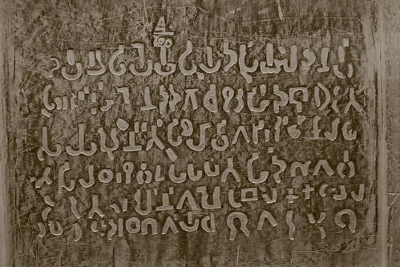

2012-06-04T11:04:21
Original: https://sujato.wordpress.com/2012/06/04/buddhism-latex/
That’s ‘LaTeX’ the typesetting system, by the way, not the kinky shiny stuff. Sorry to disappoint.
One of the reasons for my prolonged absence from this blog the last couple of months is that I’ve been re-setting all my books using LaTeX. The only way I can get stuff like that done is by ignoring other stuff.
In this post I’d like to explain why Buddhists should use LaTeX. The basic reasons are simple. It’s free and open source (FOSS); and it’s the best.
Here’s the long version.
The Suttas often mention how beautiful it was to listen to the Buddha speak. He was supposed to have had a sweet voice like a cuckoo, clear, well-articulated, neither too loud nor too soft. It was not just the content of his speech, but the manner of it that was persuasive.
Just as spoken words can have qualities that are either attractive or repulsive, so too do written words. And just as the manner of presentation of spoken words substantially effects how they are received, so too with the written word. The craft of setting beautiful written text is called typography.
There is a long history of evolution of writing, which has gradually accumulated a ‘canon’ of rules that embody the best practices of presenting the written word. These style guides are not merely arbitrary, they arise from long cultural experience of what makes a text easy to read or not.
Similar principles have been followed in typography both East and West. See, for example, this inscription from King Ashoka, one of the earliest examples of Indian writing.

Without knowing anything about it, it is easily recognisable as writing. The lines are regular, with similar sized characters, and spaced so that the characters are clearly distinct, but not so far apart that they lose a sense of organic connection.
But as an early example, it is somewhat rough around the edges. The lines aren’t straight, and the characters not perfectly formed.
Here is a later, much more sophisticated piece of Buddhist typography, from 18th century Burma.
Here the typographic art has been raised to perfection. There is an unmistakable sense of care and precision about the piece; the harmony between the form and the content; the shapes of the letters, the integration of the decoration; the use of space; and so on.
This is what happens when care is taken to produce good typography. It’s not the expensive materials and decorations that matter, it’s the attention to detail.
And that is solely what typography is: attention to detail. Each little facet of the page is, in and of itself, trivial; but taken as a whole a well laid out page creates a harmonious form, which immediately, without fuss or pretension, informs the reader that they are reading something that is worth taking time over.
If you don’t get what good typography is, you won’t get the point of LaTeX. Typography leads a reader gracefully into the text, and invites them to care for the text’s meaning. Software is only a tool, which is there to help you accomplish this. So you have to know what you want. Learn what makes good typography first, then you’ll know what LaTeX is for.
In modern Buddhism, much of the typographical tradition is lost. This is, of course, a widespread outcome of the democratisation of text, so that anyone can now lay out text with a word processor. And it is exacerbated in Buddhism, where many of the books are produced by volunteers with no specialist training or interest in typesetting. And so virtually all the free distribution books in Buddhism (and many of the commercial ones) have bad typography. Mine included! (There are exceptions: the recent hard cover editions of Ajahn Chah’s teachings were produced in LaTeX, and they look lovely.)
To my mind, this is simply disrespecting the Dhamma. Do we think so little of the Dhamma that we are content to bash out any old crud as long as it fits on the page?
One of the basic issues underlying this is the use of word processors. Word processors are intended to do what their name says – process words. They are intended as tools for writing, and they can also be used for simple typesetting. If you want to do an invitation for your daughter’s 10th birthday, fine, use Word or LibreOffice. But if you want to make a book, use something designed for the job.
For a long time I used OpenOffice—later renamed LibreOffice—to lay out my books. Bit by bit, I tamed it and bent it to my will. And it did a pretty good job, once I learned how to do stuff like justify all text by hand using character styles.
What are you talking about? I hear you say. You just hit ‘justify’ and there the text is, all neatly lined up.
Ahh, no, it’s not quite like that. Word processors typically justify text by using a very simple algorithm. They see if the number of characters in a line fits the line (which of course rarely happens). If it doesn’t, they move the last word on to the next line and stretch out the remaining words to fit. The result is loose, sloppy text, with arbitrary gaps. Once you notice this, you can’t mistake it. It looks like crap.
This is how most Buddhist free distribution books are produced, using either (pirated) copies of Word, or LibreOffice, or sometimes a graphics program (since most of the volunteers who work on the books are graphic designers, not typesetters).
A proper typesetting system does much more. It evaluates what is the optimum way of distributing characters over an entire paragraph. Stretching here, compressing there, until the minimum ‘badness’ is achieved. And yes, ‘badness’ is a thing: it is the measure LaTeX uses to quantify how far from the ideal a justified line is.
Traditionally, all this stuff was done by professionals who hand set a page, using years of experience and study of their craft to produce beautiful, optimally laid-out pages. Look at an old book, and you’ll see a well-laid out page.
When computers started to be used for typesetting, the standards fell rapidly. So much so that one of the founding geniuses of computer science, Donald Knuth, took it upon himself to write the perfect typesetting program. It took six years, and he came up with TeX. This has has some modifications over the years, but is essentially perfected and stable.
Others took up the project and created LaTeX, which is essentially a programming language that uses a set of macros to make using TeX easier. Normally you don’t have to worry about TeX, just use LaTeX.
LaTeX is the standard for pretty much every scientific journal—it is particularly good at laying out equations—and is used widely in academia and elsewhere. There is, I have to admit, a geeky thrill in using LaTeX programs that written by NASA.
There is a good reason why such high-level institutions use LaTeX. It’s the best.
And there’s a good reason why most publishers use Abode’s desktop publishing software. LaTeX is, to put it mildly, unintuitive. That doesn’t mean it’s hard. I just means you have a learning curve before you can get it to do what you want.
Desktop publishing software can produce a good book, but it is not without its problems. The main FOSS program is Scribus, and while this is excellent for newsletters, magazines and the like, it lacks some basics for books, such as footnote support. Adobe software is good, but it’s expensive. And despite the premium price, in several areas it still produces output that is inferior to LaTeX. Of course the final result depends how you use the tool, but it is still true to say that LaTeX can produce output that is at least as good as Adobe.
A couple of months ago, I reached a crisis point with LibreOffice. There was so much formatting cruft in the file, it just wouldn’t work the way I wanted it to. Seriously, open up a years-old and oft-edited file one day and see what’s inside. It’s disgusting! (For a .odt file, rename the extension .zip, extract it, and open the .xml file with a text editor.)
Fortunately, I’m living with a serious geek, Ven Nandiya (he used to design physics engines for gaming). He learned LaTeX at Uni, and walked me through the basics.
Soon enough we were producing reasonably functional LaTeX documents, and I set out on redoing all my old books. I’ve done most of them, and am working on finishing touches now.
Okay, so hopefully some of you are interested to help create some high quality Buddhist books with LaTeX. But you have no particular computer expertise, and you don’t live with a geek god. LaTeX is very well documented, but most of the documentation is intended for serious users, and taking the first steps can be difficult. So here’s a few tips to get started.
First is obvious—do some googling and read the basics.
Second, install TexLive. This might already be present on your system. Essentially, TexLive is a distribution of software packages, documentation, and the like, that lets you produce LaTeX documents. It will be a large download, but it means that pretty much everything that you want is right there on your computer.
Third, play with creating some simple LaTeX documents. Here’s how. These instructions work for Linux, I’ve no idea if they apply on other systems.
You don’t need any special tools. I tried using LyX, which is supposed to make using LaTeX easier. But I found it frustrating and never got anywhere. I suspect it’s just that LaTeX is simply not suited to a WYSIWYG approach. There are various LaTeX editors available, but I find just using Gedit, a simple text editor (with code highlighting) and a terminal works fine.
The basic process is this. You edit the LaTeX file in a text editor. Then you use the terminal to process the file. That produces a pdf of the final product. Not so hard, right? Here’s the details.
Create a file on your desktop. Name it test.tex. Open the file with a text editor (notepad or the like) and paste in the following. Or better still, write it by hand so you get used to LaTeX.
\documentclass{book}
\usepackage{lipsum}
\begin{document}
\tableofcontents
\chapter{This is a chapter}
\lipsum
\lipsum
\section{This is a section}
\lipsum
\chapter{This is another chapter}
\lipsum
\lipsum
\end{document}
Save the document on your Desktop. Open a terminal. Write cd Desktop and press enter (capitals sensitive!). This opens the terminal in the Desktop directory. Write pdflatex test.tex and press enter.
Several files will automagically appear on your Desktop. Most of these are just logs and can be ignored. One of them will be a pdf file. But hold on: LaTeX counts page numbers on the first run through and creates a Table of Contents on the second run. So retype pdflatex test.tex in the terminal and press enter once more. (Hint: to cycle through previous commands in the terminal, use the up and down arrows on your keyboard.) Now open the pdf file. And Bingo! Your very own, LaTeX-produced pdf file.
Notice how many of the aspects of a book have been done automatically. Page numbers are there, a Table of Contents is there, and clearly formatted. The text is a reasonable size, well laid out, with plenty of white space.
So what’s going on here? Let’s have a look at what this code means.
\documentclass{book} % Commands in LaTeX start with a backslash. Every LaTeX document begins by specifying a document class (book, report, article, and so on). This tells LaTeX to use a set of defaults that are suitable. ‘Book’ is, obviously, the basic class for producing books, but the ‘memoir’ class is much more powerful and flexible and probably a better choice for serious booking. However, I only found this out after achieving most of what I wanted using the ‘book’ class, so I stuck with it.
\usepackage{lipsum} % ‘Package’ is the LaTeX (and more broadly Linux) word for a piece of software. You can specify any number of packages to use in a LaTeX document. These provide extra functionality and control. Think of them like plugins for your browser or apps for your phone. This one tells LaTeX to use dummy Lipsum text when the command \lipsum appears in the document. Tip: Packages and other LaTeX stuff (like document classes) come with excellent documentation, which you already have in your TexLive installation. To get the relevant documentation, just type in your terminal texdoc nameofpackage. No really, it’s that simple. Try texdoc lipsum and see for yourself. A nicely formatted pdf pops up explaining what the package is and how to use it.
\begin{document} % Should be obvious. Everything before this point is called the ‘preamble’, something like the <head> in an html page.
\tableofcontents % Inserts an automagically produced and formatted table of contents at this point.
\chapter{This is a chapter} %Inserts a numbered chapter heading.
\lipsum %Inserts dummy text.
\lipsum
\section{This is a section} % Inserts a numbered section heading.
\lipsum
\chapter{This is another chapter}
\lipsum
\lipsum
\end{document} %What it says. Note that everything on a line that follows a % on a line in LaTeX does not appear in the document. This is used for making comments in the file.
That’s a good start, but there’s much more to be done. What if we want to change something from the defaults? This is where things start to get tricky.
The defaults on LaTeX are brilliantly thought through (in the main), but they are obviously not suitable for everything. We will usually need to do things like change the page size, the margins of text on the page, and so on. And the default fonts are fine, but kinda stodgy (academia, you know), so we’ll want to liven things up a little.
So let’s just look at making a couple of basic modifications to the text we’ve produced so far.
You may have noticed that the pdf you produced has headers at the top of each page (except, intelligently, not the chapter title page). This is good, but the headers also appear on blank pages that have been inserted before the chapter title pages. This is because LaTeX by default follows the traditional practice of starting new chapters on a right hand page. You can change this behaviour in a number of ways. It is, of course, possible to keep the blank pages and eliminate the headers from them. But the simplest solution is to insert an ‘option’ in the specification of your document class that will eliminate the blank pages altogether.
Your original command was:
\documentclass{book}
Notice the two parts of this. The ‘command’, which is written with a backslash, and the ‘argument’, which is enclosed in curly brackets. Some commands also allow ‘options, which are inserted with square brackets between the command and the argument. In this case, we insert the option openany to instruct LaTeX to start a new chapter on any page.
\documentclass[openany]{book}
Run LaTeX again, and the annoying blank pages are gone.
For Buddhist texts, it is usually necessary to display unusual diacritical marks in Pali and Sanskrit, etc. Until recently, this was a hassle in LaTeX, as it was developed in the pre-Unicode days. As such it was limited to the fonts specially developed for LaTeX by its inventor, and using other fonts required special hacks.
There are a couple of recent extensions to LaTeX that can use any font installed on your computer very easily. One is XeTeX, but I had problems getting it to do microtypography. The other is LuaTeX, which is supposed to be unstable, but I have used it for lots of things with no problems. So, try this.
To your preamble (that’s the stuff between \documentclass and \begin{document}) add the following lines:
\usepackage{fontspec}
\setmainfont{Gentium Basic}
That tells LaTeX to use the package fontspec, allowing it to specify fonts, and chooses Gentium Basic as your main font. (You do have Gentium Basic on your computer, right? Don’t use plain old Gentium, as it doesn’t have proper bold face.) Then add some Pali or Sanskrit text after the \chapter, such as:
Upayo, bhikkhave, avimutto, anupayo vimutto. Rūpupayaṃ vā, bhikkhave, viññāṇaṃ tiṭṭhamānaṃ tiṭṭheyya, rūpārammaṇaṃ rūpappatiṭṭhaṃ nandūpasecanaṃ vuddhiṃ virūḷhiṃ vepullaṃ āpajjeyya. Vedanupayaṃ vā…pe… saññupayaṃ vā…pe… saṅkhārupayaṃ vā, bhikkhave, viññāṇaṃ tiṭṭhamānaṃ tiṭṭheyya, saṅkhārārammaṇaṃ saṅkhārappatiṭṭhaṃ nandūpasecanaṃ vuddhiṃ virūḷhiṃ vepullaṃ āpajjeyya.
Now run LaTeX. But rather than using the previous command pdflatex, which tells LaTeX to make a pdf file, we use lualatex, which tells LaTeX to use LuaTex to create a pdf file. Don’t worry, it just works (assuming, of course you have TexLive installed). Enter: lualatex test.tex.
And there you have it. Gentium Basic used throughout. And nicely formatted Pali text.
But wait! Oops, the Pali text doesn’t justify properly. One of the words hangs over the line. OMG LATEX IS SUCH CRAP!!! Okay, now’s the time to breathe. Calm down. It’s only software.
What’s happening is that, whereas word processors and the like use a simple system to do line breaks, LaTeX is much more finicky. Normally this means that it handles things like justification and hyphenation really well. But in unusual cases—like an unknown language—it doesn’t know what to do. So rather than bodging up a quick fix, it leaves the problem so that you’ll notice it and can fix it up properly.
The simplest solution is to add \-, which tells LaTeX to hyphenate at that point. So saṅkhārappatiṭṭhaṃ becomes saṅ\-khārappatiṭṭhaṃ. Run lualatex again. The problem is gone, and the text justifies nicely. *Sigh of relief*
That’s enough to get started.
O, and one other thing. Most of the time you won’t be writing directly as LaTeX, but will be adapting something from somewhere else. Remember, LaTeX is for typesetting, word processors are for writing. So you want to take your .odt or .docx or .html file and turn it into LaTeX. Heh, heh! Good luck with that.
The problem is that word processors end up with a complex mishmash of style and structure information, and there’s simply no way to anticipate how that should be changed into LaTeX. Not least because much of the information—like page format, colors, and so on—need to be changed anyway, and the program can’t guess what information you want to keep. Html files should work better, as they are a structured format not dissimilar to LaTeX.
There are various ways of converting word processing files to LaTeX. Here’s some. But after experimenting we found the best way was to use Abiword, a light weight word processor that natively exports to LaTeX. It captures most of what needs to be kept—footnotes, text formatting like italics, chapters—with a minimal amount of cruft (unlike LibreOffice’s LaTeX export…).
Open your .odt or .doc file with Abiword and export to LaTeX. Open up the .tex file, clean any cruft (I said it produces minimal cruft, not none at all…), and you should have the start of a basic LaTeX file.
One thing Abiword doesn’t do very well is export non-standard characters. It recognizes a few of the common characters with diacriticals in Pali/Sanskrit, but in most cases it just omits them. Indeed, it doesn’t just problematize obscure characters, but even some common punctuation. This is because Abiword exports to vanilla LaTeX, which is not Unicode. But we’re using LuaLaTeX so we want the Unicode characters, not the code.
When Abiword gives you the Unicode for the missing character it’s easy enough to insert the relevant character using the methods described here. However in the cases where the code is simply missing, not only is the resulting file inaccurate, but there’s no simple way to search for the missing characters.
Whether this is a hassle or not depends on what you are doing. If you’re quoting lengthy Pali passages, as for example a chanting book, then never mind, you can just paste the text again from source. But if you have Pali/Sanskrit terms or quotes embedded in your text (like me), then it’s a nightmare to find and replace them.
Luckily enough, Ven Nandiya came to the rescue. He’s hacked Abiword to export the Unicode codes of all non-standard Unicode characters. Awesome! So now the LaTeX file still doesn’t have the proper characters, but it does have the unique Unicode code for each character. In addition, each code is preceded by xx, so you can find them easily in your document.
Which is great, except you don’t have it. Ven Nandiya doesn’t want to submit his hack to Abiword for inclusion, as he says it’s real quick & dirty. But if you want it, let me know.
One of the best aspects of LaTeX is that it has an enthusiastic and very helpful online community. That’s the beauty of free and open source—it’s all about helping each other. That’s the real reason why the Buddhist community—made up largely of enthusiastic volunteers who just want to help doing something good—should feel a sense of kinship with LaTeX and other FOSS projects.
We shouldn’t spend lots of money on programs designed for massive corporations. Nor should we pirate software, which is unfortunately endemic in Buddhism.
Lurking at the core of these bad practices is the subtle lack of confidence that secretly thinks that free and voluntary stuff is not as good.
But Buddhism itself puts the lie to that. Everything is, or was until very recently, Free and Open Source.
And just as Buddhism has produced and maintained some of the world’s most amazing things without the need for commercialisation, so too the FOSS community show that the same spirit of community co-operation is not just alive, but produces the best results.
Don’t believe me? Which encyclopaedia have you used the most recently—Wikipedia, or Britannica? Why? Because Wikipedia is better, obviously. But that’s too subjective. What about something really hard and technical and objective, like, say, supercomputers. No room for Mickey Mouse thinking there. Well, the designers of the world’s fastest computers would appear to be fans of FOSS: almost all of them use a derivative of the Linux FOSS operating system.
This is not a trivial thing, it is an amazing one. The voluntary work of people coming together to help out is still, despite all our corporatization, one of the major forces in human culture. It’s on the cutting edge of technology, just as it has been for 2500 years of Buddhism.